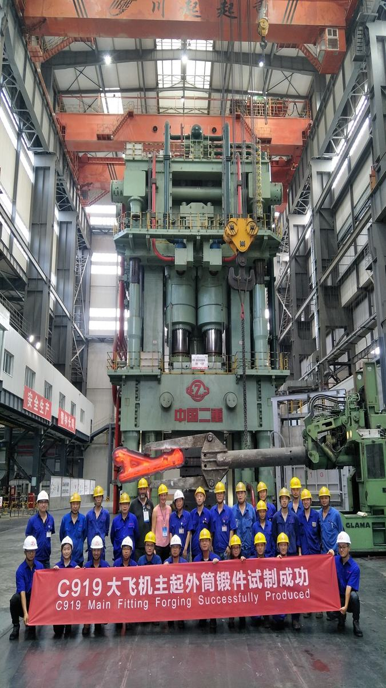
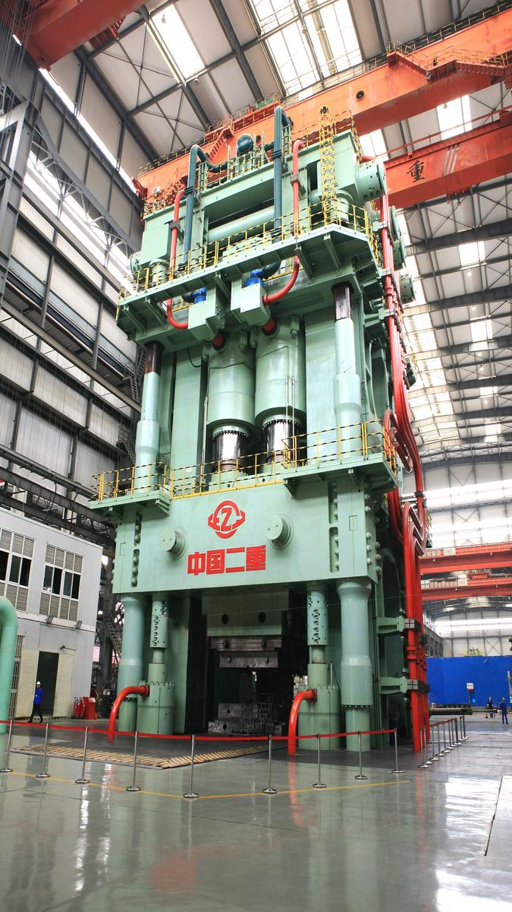
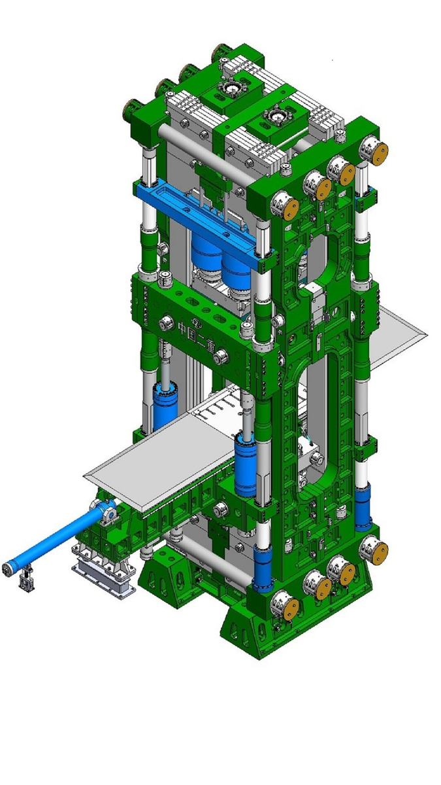

航空工业是国家战略长期发展重点，大尺寸高性能航空模锻件成为我国新一 代战机、国产大飞机研制的关键瓶颈。作为支撑国家大型飞机自主研制所急需的关键重型装备，在工信部、科技部支持下，二重装备与国内科研院所联合攻关，经过近十年努力，2013年4月800MN大型模锻压机建成投产，2015年10月24日项目通过了国家任务验收。其制造过程体现了冶金、铸造、锻造、焊接、机械加工等多专业的极限制造，突破了多项世界性难题，创下了多项国内制造的极限记录。项目的成功填补了国内400MN以上大型模锻压机的空白，整机技术居国际领先水平。
以800MN大型模锻压机为依托平台，在德阳建立了大型航空模锻件生产基地，现已批量生产四代机、 C919、大运等所需的关键大型锻件产品，标志着我国在超大承载、高精度大型模锻压机装备的成套设计制造关键技术以及大型、整体、精密、长寿命模锻件制造方面取得了重大突破。
800MN大型模锻压机是“产、学、研、用”结合的典范，是国家重大专项的“示范工程”，共取得专利38项，其中发明专利26项，实用新型专利10项，国防专利2项。发表科研论文70余篇，形成的新工艺、新技术62项，制定的标准规范5项。
目前在800MN大型模锻压机新开发的产品涉及国产“C919大客”、“大运”、“4代机”、“无人机”、“蛟龙号”、“CJ-1000商用发动机”、“新型海陆直升机”、“XX20航空发动机”、“新型航空发动机”、“GT25000燃气轮机”、“QC400/QC128新型燃气轮机”等重点项目。产品种类已达22个系列，109种，共计生产2000余件产品。
创新点一：模锻压机主机结构突破了三梁四柱传统设计思维，首次在国内建立并形成了C形板框架的设计方法。（学科名称：机械设计原理与方法，授权发明专利3项（附件1～3）；发表学术论文20篇（见附件19））
(1)提出了超大工作台面分布载荷的多层并行C形板框架预应力结构，解决了超大工作台面机架结构难以有效抵抗超大偏载力矩的难题。对比研究了大跨距不同机架结构在偏载成形过程中整机结构的刚度弯扭、应力畸变与运动变异规律，提出了满足整机高承载能力、强抗偏载能力、高结构刚度要求的“多层并行C形板框+多拉杆预紧结构+可调平面导向”的结构形式，实现了4m×8m台面承受800MN载荷和300MN·m力矩，工作台面变形不超过0.15mm/m。
(2)提出了组合承载结构“变形协调/刚度匹配”的理论应用与设计模型，在确保承载能力的同时实现了载荷在组合结构之间的均匀传递。提出了由C形板、十字键、夹紧梁等结构通过预紧大拉杆等连接方式形成的组合式承载结构，解决了该结构承载能力与可制造性之间的突出矛盾；揭示了组合结构内部载荷畸变与运动变异规律，提出了承载组合体间变形协调/刚度匹配的设计方法，协调了承载结构间的变形特性。
(3)提出了基于大尺度效应的关键承载构件疲劳寿命的分析方法、预测与长期监测方法，保证了整机结构的长寿命、高可靠性运行。提出了综合考虑大尺度效应、应力集中和表面加工方法对超大尺寸构件疲劳寿命影响的综合修正系数，获得了大型构件P-S-N曲线和疲劳可靠性计算公式，解决了超大尺寸构件长期服役条件下疲劳寿命难以预测的难题；建立了高冗余度机械结构复杂连接状态下力流传递状态与疲劳寿命的仿真预测系统，实现关键承载构件受力状态与剩余寿命的实时监测与预警。
创新点二：创新发明了超大惯量活动横梁行程瞬态补偿与同步平衡技术。自创了多缸并联驱动、主-被动混合同步平衡控制模型；建立了具有多源异构高速数据采集及智能故障诊断功能的机电液集成控制系统。（学科名称：流体传动与控制，授权发明专利9项（部分见附件5、8）；发表学术论文49篇（见附件19））
(1)提出了多缸连续增压、交叉并联平衡、电液比例卸荷相结合的高压、大流量驱动方案，解决了系统快速响应、连续增压与平稳卸荷等难题。揭示了结构、外干扰力、液压系统内部等非线性耦合对大惯量大行程运动动态精度形成的关键因素与影响规律，提出了巨型模锻压机主动纠偏、快速响应的大流量液压驱动与平衡系统的设计方法，集成了多缸连续增压、交叉并联平衡与电液比例卸荷等三大功能模块，有效保证了大惯量系统全行程运行的动态精度。
(2)提出了“主动+被动”混合瞬态纠偏、“位置+位姿”同步平衡的电液控制策略，实现了巨型压机锻造全行程的高精度平稳运行。建立了高度异构特性下压机的非线性动力学模型；提出了交叉并联被动纠偏与主动平衡补偿相结合的混合同步方案；构建了基于系统分解的“速度外环+压力内环”结合的两环同步控制策略；提出了基于不同模锻件特性的压制曲线的变速率控制方法，实现了800MN压机锻压全行程的变速率高精度平稳控制。
(3)建立了多源信号的数据采集与高维信息融合技术，提出了基于支持向量机的故障诊断与基于神经网络容错控制相结合的智能故障诊断与容错控制技术，确保了系统运行的可靠性。针对传感信号多源、多维、异构及时空关联等特征，提出了采用小波变换、径向基函数神经网络和蕴含时序贝叶斯网络方法，实现各类故障特征有效提取及智能识别；构筑了故障知识岛，结合基于神经网络算法的容错控制技术，实现了压机运行状态的实时监控与智能诊断。
创新点三：创新发明了多项超大构件制造工艺技术，满足机身结构超大、特厚、特小厚长比异形零件均质化要求的铸造、锻造、焊接及全流程形变控制的高品质制造。（学科名称：钢铁材料加工制造工艺，授权发明专利3项（见附件19、11）；发表学术论文7篇（见附件19））
(1)提出了差异化控制多包合浇与树脂砂地坑全冷模顺序凝固技术。开发了多包钢水浇注控制系统，实现了多包合浇重量与时间的精确控制；提出了差异化元素成分控制新工艺，实现了成分偏析的有效控制，显著改善了大型实心铸件的质量与尺寸精度，并最终实现500吨单件铸件碳偏析低于0.25%的无缺陷均质化铸造。
(2)提出了高柔性易变形特小厚长比板形件的全流程控形控性制造技术。开发了筒体“扩-剖-展”锻造超大尺寸板件及立式淬火技术，实现了特小厚长比（1:112）的C形板件高精度制造；开发了超大尺寸板形件“局部加热+深坡口窄间隙立焊”相结合的多焊口焊接工艺，实现了9段拼焊36米超大尺寸焊接板形件整体变形量小于0.2mm；制定了激光跟踪引导、分段半精加工与成组精加工相结合的超长板形件机械加工工艺方案，实现了20片C形板0.1mm的共面精度要求。
(3)提出了超大特厚锻件多向锻透与均质性调控技术，实现了特厚饼坯高性能成形制造。提出超厚锻件复合锻造技术，解决锻件内部缺陷闭合与均质性的难题，实现直径3000mm，厚度1700mm主缸缸底锻件的均质性。
(4)开发了超深坡口窄间隙单面焊双面成形技术，实现了世界最厚600mm主油缸等超厚筒体100%超声波探伤Ⅰ级（压力容器标准）高质量焊接。
创新点四：建立了基于800MN大型模锻压机的工艺创新平台，发明了高应变比短流程模锻、流变控制精确成形、超高强度钢细晶控制等新技术。（学科名称：塑性加工工艺与设备，授权专利27项（部分见附件18、20）；发表学术论文50篇（见附件19））
(1)提出了大型整体锻件模锻全流程微观组织演变与力学性能的数字化表征方法，揭示了高性能模锻件目标微结构与性能生成的能场条件。多尺度表征了各类典型合金不同变形条件下的高温粘塑性行为、组织晶粒与织构演变，揭示了材料流变、高温软化过程的动态回复与再结晶机制，建立了晶粒高温演化模型，实现了加工全流程微观组织与力学性能的数值建模与性能预测；研究分析了各典型难加工材料的热加工工艺窗口，在此基础上形成了基于全制造流程形性协同的锻坯与模具优化设计方法。
(2)针对大型复杂结构模锻件流线连续和精确成形控制问题，揭示了模锻件流线连续、随形定向生成的机理，提出了“预成形、模具型腔和变形量分配”等全流程综合调控技术。发明了模压预制坯形状调控、模具型腔优化和大变形量分配技术，实现了从简单形状预制坯到复杂形状大型模锻件的短流程近净制造，成形精度大幅提高，材料利用率提高11%～30%。相对国内外小量级压机的成形，针对大型复杂模锻件发明高应变比短流程锻造技术，锻造火次减少了35%～60%，并实现了复杂锻件连续流线和组织性能的综合调控。
(3)针对大尺寸薄壁、高筋复杂框类模锻件组织性能一致性和残余应力控制难的问题，形成了一系列创新性核心工艺技术。利用800MN压机大载荷能力，提出了复杂框类锻件少火次变形量优化分配与低温大变形细晶锻造技术，显著降低了锻件的各向异性行为，提高综合力学性能；发明了双重退火防变形工艺与炉内翘曲校直技术，有效控制大尺寸薄壁、高筋复杂框类锻件的残余应力，满足了大型航空复杂锻件的形性协同控制。

